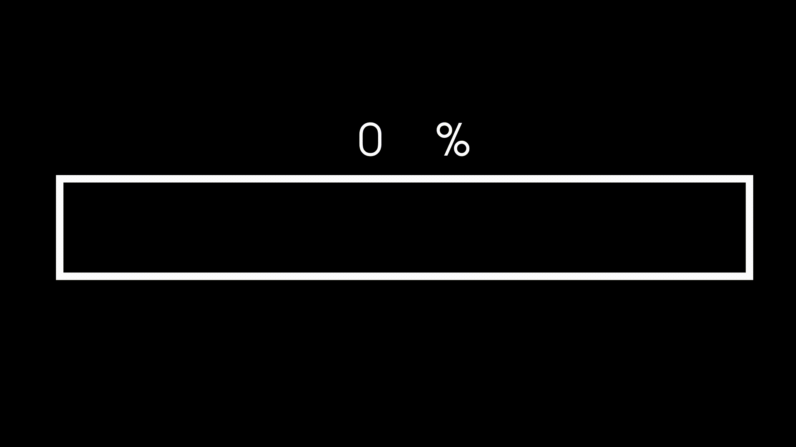
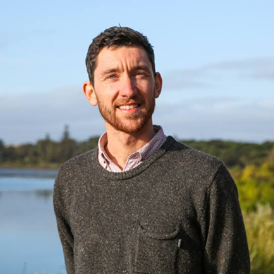
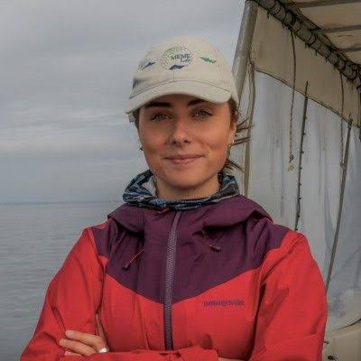

A small international scientific base is established in Antarctica by a Mexican research team.
The station officially opens and begins research on climate change, ice cores, atmospheric chemistry, aurora australis, glaciers, and seismic activity. Operations rotate 18 scientists in summer, 9 in winter.
For 29 years, scientists report mysterious occurrences: encounters with people they feel they know but have never met, hearing voices warning them to leave, sightings of a black dog speaking in an unknown language, and phantom helicopter sounds with no visible aircraft.
A scientist sends a photograph of himself holding a severed octopus head to the Mexico station without explanation. Days later, his roommate is found dead, suspected poisoning.
Connection to Station Kestrel is abruptly cut during transmission of a documentary about Antarctic geology. The Mexico station attempts reconnection repeatedly without success.
The Mexico team sends a plane to Antarctica. Upon arrival, the rescue team finds the station abandoned—no scientists, no food supplies, no equipment.
After an extensive month-long search, all scientists are found drowned in the ocean. Their food supplies are recovered with them, despite having no diving or search equipment.

Geology
Specializes in glacial geomorphology and seismic activity monitoring in polar regions.
Expertise: Ice core analysis, Tectonic mapping
Chemistry
Researches atmospheric chemistry and chemical composition of Antarctic ice.
Expertise: Atmospheric analysis, Isotope chemistry
Physics
Studies aurora australis phenomena and ionospheric interactions in Antarctica.
Expertise: Aurora dynamics, Electromagnetic fields

Biology
Investigates extremophile organisms and marine life in Antarctic waters.
Expertise: Microbiology, Marine ecology